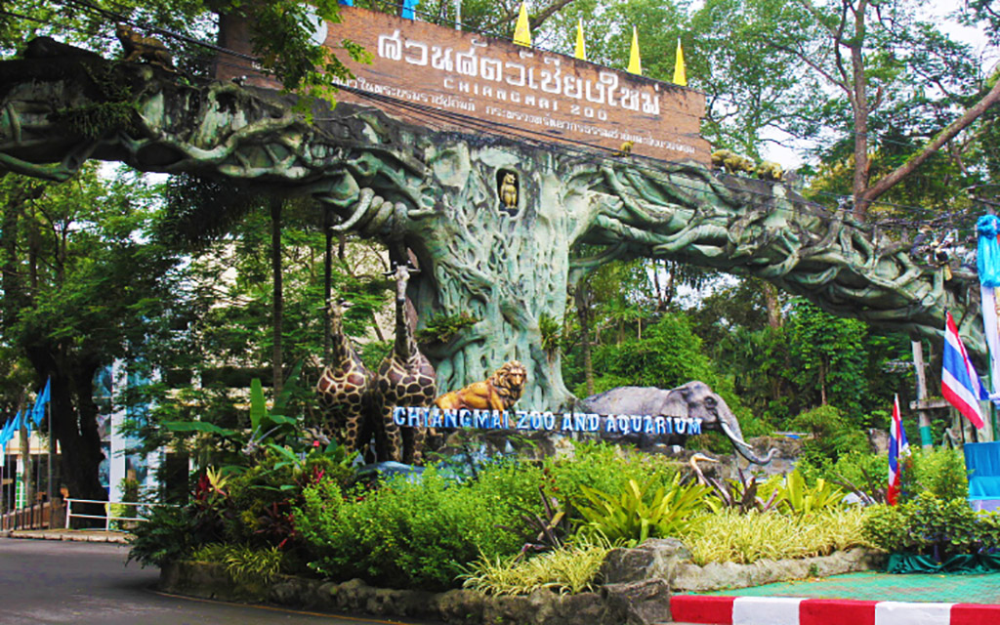

สถานที่ท่องเที่ยวแนะนำจังหวัดเชียงใหม่ในปี 2024
1. วัดพระธาตุดอยสุเทพ
วัดพระธาตุดอยสุเทพราชวรวิหาร ตั้งอยู่ในอุทยานแห่งชาติดอยสุเทพ-ปุย วัดมีความสูงจากระดับที่ราบเชียงใหม่ราว 689 เมตร และมีความสูงจากระดับน้ำทะเลปานกลาง 1,046 เมตร เป็นหนึ่งในวัดที่มีความสำคัญมากที่สุดของจังหวัดเชียงใหม่

2. ดอยอินทนนท์
ดอยอินทนนท์ เป็นยอดเขาที่สูงที่สุดในประเทศไทย[1] ตั้งอยู่ที่อำเภอจอมทอง จังหวัดเชียงใหม่ เดิมมีชื่อว่า "ดอยหลวง" หรือ "ดอยหลวงอ่างกา" ชื่อของ ดอยอินทนนท์ เป็นชื่อของกษัตริย์พระนามว่าพระเจ้าอินทวิชยานนท์

3. ดอยอ่างขาง
ดอยอ่างขาง ตั้งอยู่บนทิวเขาแดนลาว ตำบลแม่งอน อำเภอฝาง จังหวัดเชียงใหม่ มีความสูงโดยค่าเฉลี่ย 1,400 เมตรจากระดับน้ำทะเล และมียอดดอยสูงสุดถึง 1,928 เมตร เป็นที่ตั้งของสถานีเกษตรหลวงอ่างขาง ซึ่งเป็นสถานีวิจัยแห่งแรกของโครงการหลวง เริ่มดำเนินงานเมื่อปี พ.ศ. 2512 ตามแนวพระราชดำริในพระบาทสมเด็จพระเจ้าอยู่หัว พระมหาภูมิพลอดุลยเดชมหาราช รัชกาลที่ 9

4. ม่อนแจ่ม
ม่อนแจ่ม ตั้งอยู่บริเวณหมู่บ้านม้งหนองหอย ในตำบลแม่แรม อำเภอแม่ริม จังหวัดเชียงใหม่ มีลักษณะเป็นพื้นที่บนสันเขา มียอดสูงราว 1,350 เมตร บริเวณใกล้ ๆ ม่อนแจ่ม เป็นที่ตั้งของศูนย์พัฒนาโครงการหลวงหนองหอย

5. สวนสัตว์เชียงใหม่
สวนสัตว์เชียงใหม่ เป็นสวนสัตว์ในความดูแลขององค์การสวนสัตว์แห่งประเทศไทย ในพระบรมราชูปถัมภ์ ตั้งอยู่บริเวณทางขึ้นดอยสุเทพ บนถนนห้วยแก้ว ตำบลสุเทพ อำเภอเมืองเชียงใหม่ จังหวัดเชียงใหม่ เปิดให้บริการทุกวัน ตั้งแต่ 8.00 น. - 17.00 น. มีสัตว์อยู่จำนวนมาก เช่น เสือโคร่งขาว กวาง วัวแดง ฮิปโปโปเตมัส
เผยแพร่: